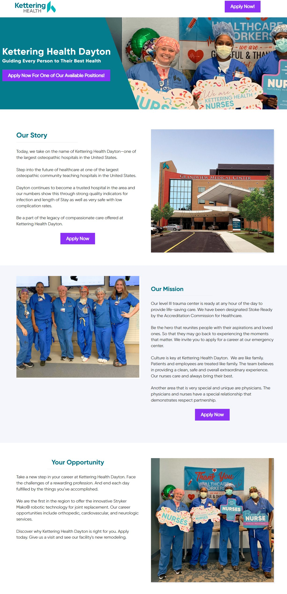
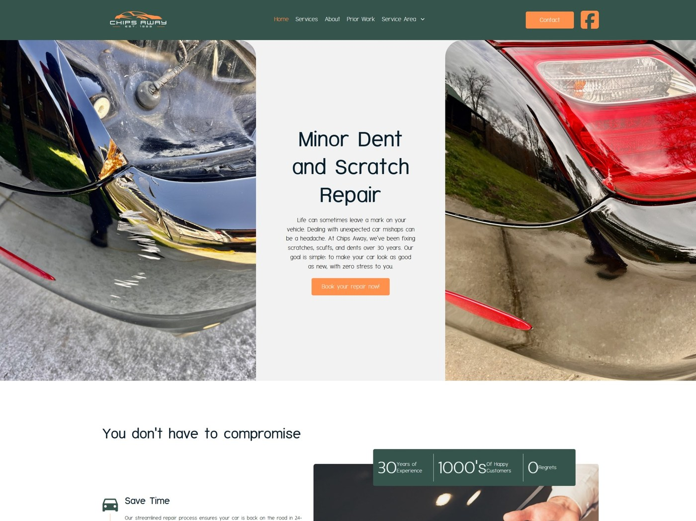
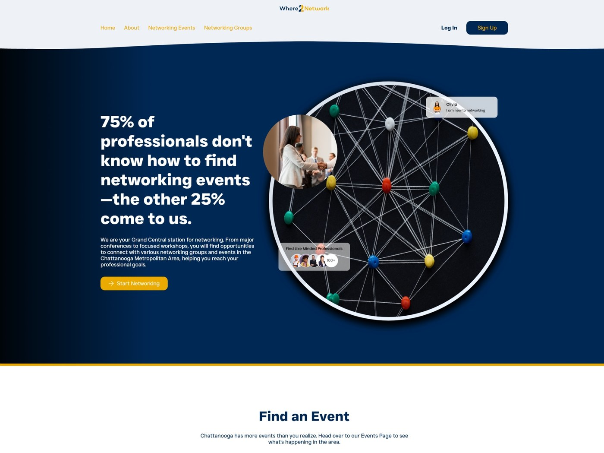

Case studies
Landing Pages
Three clients, three audiences that share almost nothing. A nurse weighing a job change, a driver with a scuffed bumper, and a professional trying to find the right room to walk into. Each one needed a different voice.
Kettering Health
Recruitment pages for six facilities
A twelve-thousand-employee health system needed to recruit clinical staff to six different campuses — each with its own history, specialties, and community. One generic careers page would have flattened all of it.
I wrote localized copy for each location, anchoring every page in what made that hospital specific: Hamilton’s century in Butler County, Dayton’s osteopathic teaching legacy, Troy’s 2019 opening, Main Campus as the flagship cardiovascular center. The structure stayed consistent so the system read as one brand; the substance changed so each page read as one place.
“Be the hero that reunites people with their loved ones.”

ChipsAway USA
Selling a repair people assume is expensive
Most drivers hear “bumper damage” and picture a body shop, a week without a car, and an insurance claim. ChipsAway does none of that — but the category assumption was doing the selling before the site got a chance to.
So the copy names the objection directly and works through it: what the repair actually is, how long it takes, what it costs against the alternative. The site’s spine became a promise about what the customer doesn’t have to give up.
“Not a Body Shop.”

Where 2 Network
Naming a problem people hadn’t named
A Chattanooga platform that aggregates local networking events. The hard part wasn’t explaining the product — it was making professionals recognize they had the problem it solved, since most people don’t consciously think “I can’t find events,” they just don’t go.
The hero headline does the recognition work and the positioning in one move, splitting the audience into the people who are stuck and the people who already found the answer — then inviting the reader to pick a side.
“75% of professionals don’t know how to find networking events — the other 25% come to us.”

More samples


“The only thing that makes writing good is giving it our voice, our own personality. Writing is always an act of faith in your own character.”
— Anna Quindlen
Let's work together
Need words that move people?
I'm open to copywriting, content and digital marketing roles and projects.